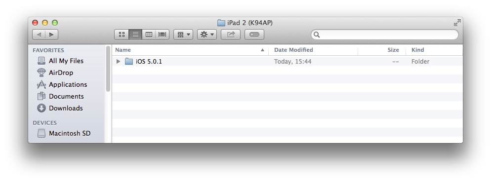
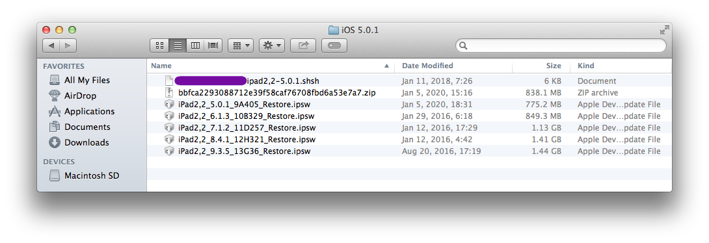

Prepare workspace
Working on an iBoot exploit like that one can rapidely becomes a mess, I suggest you to keep your files organized as much as possible.
Create the following folder structure in a place you will remember on your computer. I usually create a folder for the concerned device, then inside it, a folder for each iOS versions I port the exploit to.
For example, ./iPad 2 (K94AP)/iOS 5.0.1

Move all previously downloaded files to iOS 5.0.1 folder. If you have an iOS 5.0.1 saved SHSH blobs file, copy it to this folder as well because we will need it for the downgrade.

The following files should be in the iOS 5.0.1 folder.
- iOS 5.0.1 SHSH blobs
- iOS 5.0.1 .ipsw firmware (iPad2,2_5.0.1_9A405_Restore.ipsw)
- Full iOS 6.1.3 .zip OTA firmware
- Any other .ipsw firmware you plan to use for post-exploitation.